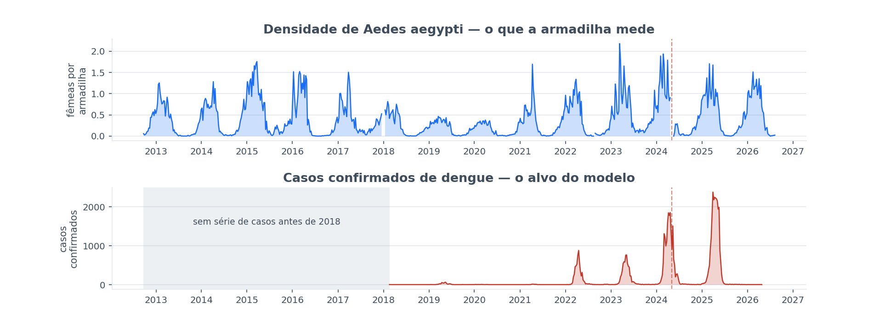
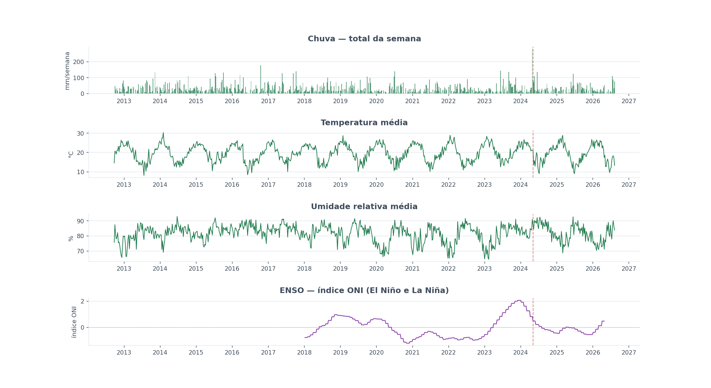

Modelo preditivo de casos de dengue em Porto Alegre
A partir da captura de mosquito das armadilhas municipais, do clima e do histórico de notificação.
Vinicius Guerra · Seminário de Andamento
PPGC — UFRGS · Orientação: Prof. Weverton Cordeiro
Agenda
Agenda
- 1. Objetivo
- 2. Dados
- 3. Cenários testados
- 4. Cenário adotado
- 5. Resultados parciais
- 6. Próximos passos
Objetivo
Medir se a rede de armadilhas antecipa a dengue — e com quanto tempo
Picada
Sintoma
Atendimento
Notificação
Quando a curva de casos sobe, a transmissão já aconteceu. Agir nesse momento é agir tarde.
Objetivo
Construir um modelo que preveja quantos casos de dengue virão
Captura de mosquito
Clima
Histórico de casos
Previsão
1 semana
1 mês
2 meses
3 meses
Dados
A curva do mosquito e a curva da doença, no mesmo eixo de tempo

Dados
E o clima, que é o que faz o mosquito proliferar

Dados
O clima entra como 22 variáveis, não como uma
| Tema | Colunas geradas |
|---|---|
| Chuva | precip_total_mm precip_max_dia_mm precip_media_dia_mm dias_de_chuva |
| Temperatura | temp_media temp_min temp_max temp_amplitude_media |
| Ponto de orvalho | orvalho_min orvalho_media orvalho_max |
| Umidade | umid_min umid_media umid_max |
| Pressão | pressao_min pressao_media pressao_max |
| Radiação solar | radiacao_min radiacao_media radiacao_max |
| Vento | vento_media vento_max |
Fonte: NASA POWER
Cenários testados
9 cenários, cada um mudando um parâmetro por vez
| # | Cenário | Alvo | Modelos |
|---|---|---|---|
| 1 | Casos de dengue — sem El Niño | Casos, sem El Niño | LightGBM |
| 2 | Casos de dengue — com El Niño | Casos, com El Niño | LightGBM |
| 3 | Casos de dengue — com corte de maturidade | Casos, com corte de 12 semanas | 9 algoritmos |
| 4 | O ganho do mosquito | Casos, com conjuntos fixos de variáveis | LightGBM |
| 5 | O ganho é real ou é sorte? | A diferença de erro, sob teste estatístico | LightGBM |
| 6 | Comparação com a literatura | Casos e a subida que um artigo prevê | LightGBM |
| 7 | Vai ter surto? — casos confirmados | Surto de casos confirmados | LightGBM |
| 8 | Vai ter surto? — casos notificados | Surto de casos notificados | LightGBM |
| 9 | Mosquito por bairro | Densidade de mosquito por bairro | LightGBM |
Cenário adotado
A configuração de referência, e como ela foi escolhida
⏳ Rascunho. HistGradientBoosting, perda quantílica em 0,85, com vetor — vencedora entre as 30 testadas pelo menor erro de calibração.
Falta aqui: a validação walk-forward e o período efetivamente usado no treino.
Resultados parciais
O modelo é honesto até um mês, e perde força em três
| Horizonte | R² | Erro médio | Captura do pico |
|---|---|---|---|
| 1 semana | 0,898 | 98,0 | 89% |
| 1 mês | 0,628 | 219,7 | 70% |
| 2 meses | 0,450 | 272,6 | 42% |
| 3 meses | 0,437 | 278,7 | 39% |
A memória da própria série de casos explica 91% do acerto em uma semana e 0% em três meses.
Resultados parciais
Como alarme de surto, ele acerta 97% das semanas a um mês
| Horizonte | Sensibilidade | Precisão | Falsos por ano |
|---|---|---|---|
| 1 mês | 97,1% | 94,3% | 0,7 |
| 3 meses | 76,9% | 81,1% | 2,3 |
A avaliação contém apenas 2 episódios de surto.
Resultados parciais
A armadilha não adiciona sobre clima e histórico — e isso pede explicação
Sobre um modelo que já tem clima e histórico de casos, a armadilha não melhora a previsão em nenhuma comparação que sobreviva à correção.
Que o mosquito não importa. Sem vetor não há transmissão — e a subida da captura aparece antes da subida dos casos.
Um resultado nulo diante de um padrão visível e biologicamente esperado aponta mais para um efeito que o desenho atual não captura do que para ausência de efeito.
Próximos passos
Deslocar a pergunta da consequência para a causa
| Hoje | Próxima etapa | |
|---|---|---|
| Alvo primário | casos de dengue | casos das quatro arboviroses, a partir do vetor |
| Alvo secundário | — | a proliferação do vetor, de clima e captura |
| Horizonte | até 3 meses | até 6 meses |
| Primeira pergunta | o vetor melhora a previsão? | qual é a defasagem entre as duas curvas? |